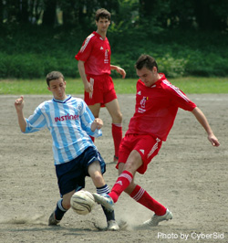
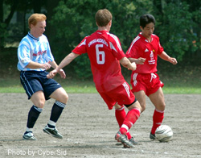
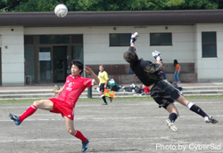
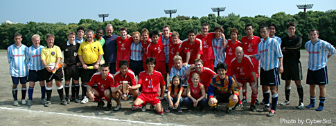

Sat 18th June, Oifuto. Swiss veteran striker and joint top goal-scorer in the TML, Karl Hahne scored two first-half goals to secure the Footy Japan Cup and the double for the Swiss Kickers.
|  |
James Batten make another pass down the left as Robert Buckley gets there just too late to block it. |
The game kicked-off with YCAC only managing to field a squad of 12, whereas the Swiss had at least two subs to give the team some options and respite for players when needed.
The first turning point in the game came when the Swiss left back, Kai, carried the ball from 40yds out, attacking the space in front of him aggressively, YCAC failed to close the space and
the young defender had all the time in the world to wind up, hit a rocket and force a very good save from Derek, the young YCAC keeper.
Seconds later and it was Krando for the Swiss who carried the ball into the YCAC box, but instead of squaring the ball to an open Angelo, he rifled one off the upright, much to
the relief of the YCAC back four, who had been caught napping.
The Swiss, now holding onto the ball well, switching play and generally looking very comfortable, went on the search for their first goal. YCAC responded by clearing their lines well and new
boy Mike Foster sent some threatening long-throws into the Swiss's areas, looking for a touch from one of the strikers, but to no avail.
A tactical substitution by Kirk, the Swiss captain, saw Karl Hahne step on the pitch in his infamous center forward role and within a couple of minutes of him being on the pitch found
himself, for the umpteenth time, with the ball at his feet and his back to goal. He spun, struck the ball that in turn deflected off the defender and proceeded to bounce over the keeper and into
the back of the net. 1-0.
|  |
Dave Spears in his last game for Swiss, plays keep-ball with Aoki as Phil Denham can do little to stop them. |
There was a certain inevitability about the Swiss's second goal 5-minutes later, that followed from some neat possession play preventing YCAC from holding onto the ball and connecting passes.
James, who was involved in the majority of the Swiss's offensive moves, picked up the ball on the left flank and hit a perfectly weighted ball to the feet of Angelo, who was starting his run down
the left wing. Angelo in turn squared an early ball to an unmarked Karl Hahne to finish from close range. 2-0.
The Swiss had a half chance to extend their lead when Angelo's acrobatic volley from the edge of the area, following a pin-point cross from a Swiss midfielder, ricocheted back off the upright.
This was almost immediately followed by a heart-stopping moment for Steve Taw, whose backward header to his own keeper dropped to the feet of a poaching Karl Hahne, with only the onrushing keeper to
beat. Fortunately for YCAC, Karl's attempted chip didn't have enough elevation to beat the YCAC keeper.
On the stroke of half time the Swiss keeper was properly tested for the first time by the YCAC No. 6 from range, but the agile man between the sticks parried effectively, leaving YCAC with
a lot to think about during the recess.
The Swiss started the second half looking poised and efficient - switching play well and utilizing Aoki wide on the right, who went the entire game unmarked and sent countless threatening
balls into the YCAC box.
Derek again pulled off a great save from a tight angle and moments later the Swiss found the back of the net after bombarding the YCAC goal, only to be (quite rightly) ruled offside. It was
Derek again who kept YCAC in the game, parrying a free kick that was swung in almost from the touchline and had he not got a hand to it, the ever-alert Suzuki for the Swiss would have had an easy
header at the back post.
|  |
Another acrobatic save from Derek Bean does just enough to take the ball away from he path of an advancing Mori of Swiss Kickers. |
As the Swiss turned up the heat YCAC were running out of ideas and frustration was beginning to show. A well-timed through ball from the Swiss mid-field saw
Angelo 1-on-1 with the keeper, who reacted quickly and was charging out of his box. Derek just managed to volley the ball to safety before the striker could pick his spot.
With the Swiss comfortably camped out in the YCAC half, it seemed to be merely a question of when, not if the third goal would come. Mori rifled a shot from range that was stopped only by
the woodwork and when YCAC failed to clear a spilled ball, Aoki's squared pass found Angelo in front of goal, but instead of a simple sidefoot to guide the ball into the net, somehow managed to put the ball over the bar from 10 yards.
In the final 20 minutes of the game YCAC started to put some useful passes together and move as a unit down the field. Kirk, playing his usual steady game at the back quickly turned defense
into attack with a lofted pass that exploited the space between the YCAC midfield and defense. Angelo picked up the ball on a diagonal run, beating the offside trap and again had only the keeper to
evade. He seemed to take an age to pick his spot, giving YCAC defender and captain Steve Taw just enough time to lunge, make contact with the ball first and put Angelo up in the air thereafter.
James, the Swiss's chief workhorse in midfield saw his half volley on the edge of the area fly just wide. Minutes later Joe Takeda was involved in some "afters" that resulted in him picking
up an avoidable yellow card. Joe nearly exacted revenge seconds later, but his glancing header from a corner kick failed to hit the target. Following this, YCAC seemed to find a new gear and started to
dominate the game. Moving the ball out of defense through midfield and up to the strikers, but it was to be too little too late. YCAC narrowly avoided a penalty when Angelo picked up the ball in
the YCAC box and subsequently shot wide, but at the same time, off the ball and apparently not in the ref's eye line, Suzuki for the Swiss was unceremoniously bundled to the ground.
The Swiss, although happy with the final result and winning the cup, may be asking questions about the hatful of chances missed. YCAC on the other hand maybe asking themselves what might've
happened if they had played the entire game in the same vein as the last 15-minutes. Ifs, buts and maybes aside, there was no great surprise about the result of this game, or the league in
general. TML first division teams certainly have a lot to think about before the start of the TML third season, if "the inevitable" is to be avoided.
TML
|  |
Swiss Kickers and YC&AC both looking tired (and a bit red) after a fierce battle in the June heat. |
|